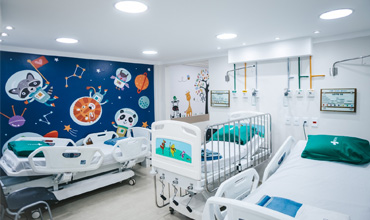

minha história



Médica Pediatra e Infectologista Pediátrica
Estou comprometida com a saúde integral das crianças, oferecendo um atendimento que valoriza a singularidade de cada pequeno paciente. Com formação em pediatria e especialização em infectologia, crio um ambiente acolhedor onde as famílias se sintam à vontade para compartilhar preocupações. Meu objetivo é ser uma parceira na jornada de saúde, promovendo a prevenção e a educação em saúde, ajudando a construir hábitos saudáveis para garantir um futuro cheio de alegria e bem-estar.
183034
c95869
dracatarinabueno.com.br
Pediatra/Infectologista Pediátrica
(11)5039-2266
contato@dracatarinabueno.com.br
dracatarinabueno.com.br